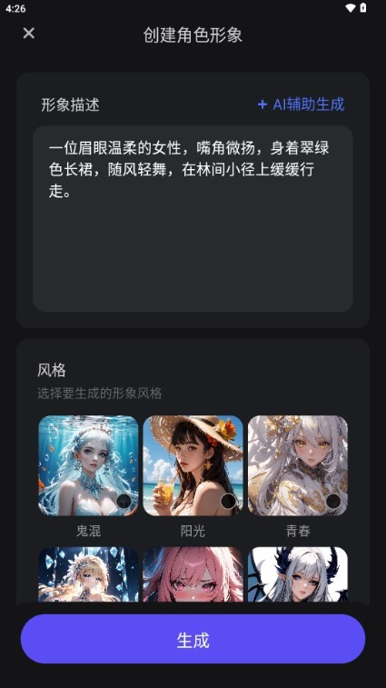

AiU 到底值不值得用？从心理大模型底座聊到捏人系统的实体验
AI 陪伴赛道不缺产品，但把心理学理论揉进对话模型的没几家。老用户聊 AiU 的真实优势与取舍，帮你判断它是不是那个对的选择。
AI 陪伴这个赛道，这两年涌出的产品双手数不过来。从大厂的通用助手，到垂直类的角色扮演，再到主打情感倾诉的心理类工具——用户的选择面宽了，但真正做得「不一样」的其实没几个。AiU 算是其中一个。
我前后用过好几款同类产品，从早期的角色扮演平台到后来的心理陪伴应用，中间也来回切换过。之所以单独写 AiU，不是因为它功能最多或者界面最好看，而是它在底层路线上跟大多数同类走了一条不同的路，导致体验上呈现出几个别人做不到的特性——有兴趣可以去它的官网感受一下整体风格。这篇就聊聊这些特性到底值不值。
定位：心理模型 vs 通用套壳
先讲行业格局。目前市面上的 AI 陪伴产品大致分两类：一类是拿通用大模型（大厂的开源模型或商用 API）套个壳，重点在角色设定和社区运营；另一类是在通用模型之上再加一层行业或场景专精的模型。
绝大多数产品走的是第一类路线——门槛低、上线快、模型能力随上游升级自动跟进。AiU 走的是第二类，而且方向很明确：把心理学理论和对话模型结合起来做情感智能。产品背后的聆心智能，清华计算机系出来的团队，在心理大模型这条线上攒了好几年，他们自研的 Emohaa 模型就是专门往对话里注入情绪理解和共情回应的能力。
这不是换个说法炒概念。同样一句「今天好累」，通用模型可能回复「辛苦啦，好好休息」，而有心理模型底座的产品会先判断你累的是身体还是情绪，再给出差异化回应。这个底层差异直接决定了后面所有体验——角色能不能真的「懂你」，心理抚慰类角色的对话有没有支撑，都跟这个有关。想深入了解这套技术路线和产品细节，可以翻一下AiU文档。
差异化一：捏人系统的颗粒度比想象中细
AI 陪伴产品的角色创建，大多停留在「选头像、起名字、设个性标签」这一步，AiU 不一样。它把捏人拆成了好几个环节，每个环节都有明确的引导和可操作的公式。
比如形象描述，输入框里直接给了范例，拆开来是人物特征、动作道具、场景光线三类词各写一两个。不是让你瞎写「好看」「有感觉」，而是教你写「银白色长发、发尾微卷」「站在雨后的巷口，路灯下」「冷色调，雾气朦胧」这种有画面的描述。还有 AI 辅助生成按钮，实在写不动让 AI 替你写一版。

语音音色也是独立的一环。很多同类产品要么没有语音，要么只有几档预设可选。AiU 把音色跟形象绑定——甜系立绘配甜系音色，御姐系配成熟音色，甚至有语调调节让同一把声音表现出不同语气。我自己捏了个清冷御姐角色，选了低音量的成熟音色，她念开场白的瞬间，人设一下子就立住了。这种细节颗粒度，在同类产品里确实少见。
差异化二：心理抚慰角色有真实技术支撑
这可能是 AiU 最独特的点。市面上主打心理陪伴的产品不少，但很多只是把通用模型套上一个「心理咨询师」的角色皮，并没有真正的心理学知识底座。AiU 的 Emohaa 模型公开说是国内较早的心理方向大模型，把助人理论之类的心理学框架嵌进了对话逻辑里。
实际用起来是什么感觉？我在压力大的时候试过那个心理抚慰类角色。先说边界：它明确告诉你自己不能替代心理咨询，这个定位很清楚。但在倾诉层面，它不像普通聊天机器人那样只会附和，有时候会反问我情绪的具体起因，有时候会给一些整理思路的建议。你能感觉到它的回应不是纯随机生成的，是有一套结构化的理解框架在里面。
当然，这也带来了一个问题：如果你要的是无厘头的角色扮演或者纯娱乐，Emohaa 模型的这套逻辑可能让你觉得放不开。这就是路线选择带来的副作用，下面会详细说。
取舍：为这些优势付出了什么
没有完美的产品。AiU 的差异化优势背后，是几个明显的取舍。
第一个是账号体系的简单。手机号就是账号，验证码就是密码——方便归方便，但风险也实实在在。如果哪天你换了手机号忘了改绑定，旧号码被运营商回收再分配给别人，新机主一个验证码就能登进你的账号。账号保护相关的选项我翻遍了设置也没找到多少。这一点比很多同类产品做得简陋，我个人是换手机号前特地登了几次把重要内容处理了一遍。
第二个是功能的聚焦。既然把重心放在情感和心理模型上，AiU 在其他玩法上就显得保守。比如社区广场的内容量，跟已经运营了好几年的同类平台比还有差距；一些通用的角色扮演功能，它也没有做得像某些竞品那么花里胡哨。喜欢折腾各种玩法的用户可能会觉得内容不够多。
第三个是平台覆盖。安卓和 iOS 都有，安装包从官方下载拿就行，但某些特定场景的支持就有限了。如果你习惯在 PC 端用 AI 陪伴产品，AiU 目前的重心还是移动端。
选购结论：什么样的人该选 AiU
说了这么多，做个清晰的选购判断。
适合选 AiU 的：
- 你想要的是「真的能聊」的情感陪伴，不是套壳聊天机器人。工作压力大、需要倾诉和整理情绪的人，Emohaa 模型的支撑会让体验不一样。
- 你喜欢精细化的角色定制。捏人系统的颗粒度、形象描述公式、语音音色绑定这些细节，对捏角色有追求的用户来说很有吸引力。
- 你在意产品背后的技术路线。清华团队、智谱体系、心理大模型这些背景，意味着它不是短期跟风项目，技术路线有积累。
不太适合的：
- 你只想要个娱乐消遣的角色扮演，或者要大量预设角色内容。AiU 不是往这个方向做的，社区和玩法都还有限。
- 你是账号安全敏感型用户。手机号单账号体系的风险客观存在，如果这一点让你不安，可以先观望。
- 你习惯 PC 端使用。移动端优先的策略短期内不太会变。
最后给一句明确的推荐：在 AI 陪伴这个赛道已经高度同质化的当下，AiU 选择了一条少有人走的技术路线，并且在捏人和心理抚慰这两个方向上做出了真正的差异化。如果你恰好对这两点有需求，它值得认真试一下。这套关于 AiU 的整理资料同步到了三个仓库，方便不同网络环境下查看：GitHub、Gitee、GitCode。